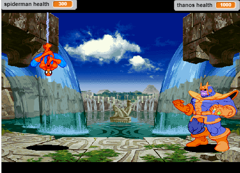
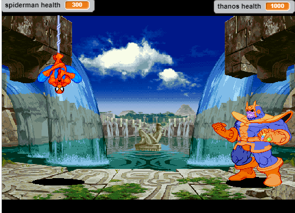
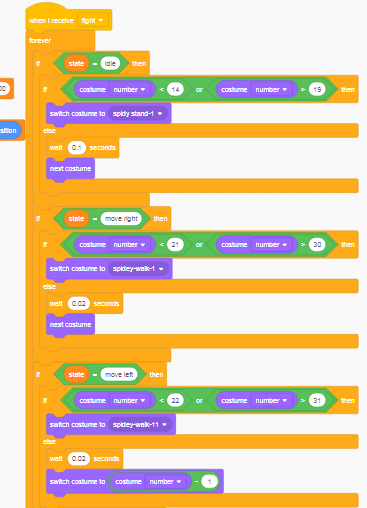

AVENGERS IV
 
Home

Home
Description
In this epic battle you are dropped off in Wakanda to fight the Titan Thanos in a side scrolling battle. The scoring system is trying to get Thano's health to 0 while keeping your health above 0. Randomness occurs when Thanos attacks and which animation spiderman will throw. the game gets more difficult the weaker Thanos is he does more damage. You lose when your health gets to 0.
Reflection
My inspiration for this game was seeing Infinity War I wanted to see Spiderman take on Thanos and lose which is why I made the game so hard. Successful points in my game were making spiderman move backwards and sizing up all the animations to fit exactly where it was previously. Obstacles in making my code were to make the different animations activate only on one button. If I had more time I'd make more moves and attacks for both Spiderman and Thanos and make a jumping mechanic.

In my code I had a hard time syncing the correct frames of the animations with the correct button so I put state variables which made things really simple for example if spiderman state was in walking left he would do play the different pictures backwards.